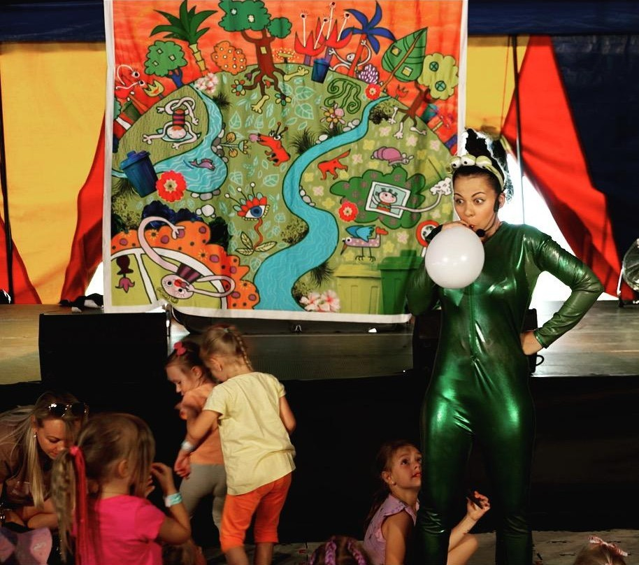

Vítejte!
Náš divadelní soubor Cestovatélko nabízí dětské muzikálové inscenace. Přijďte se podívat na naše interaktivní vystoupení plné písniček, masek a her, kde dva nejlepší kamarádi Pimpilimpi a a Pompolompo učí děti.
Nejbližší představení
- 12. dubna: O Koblížkovi
- 20. dubna: Červená Karkulka
- 1. května: O statečném princi